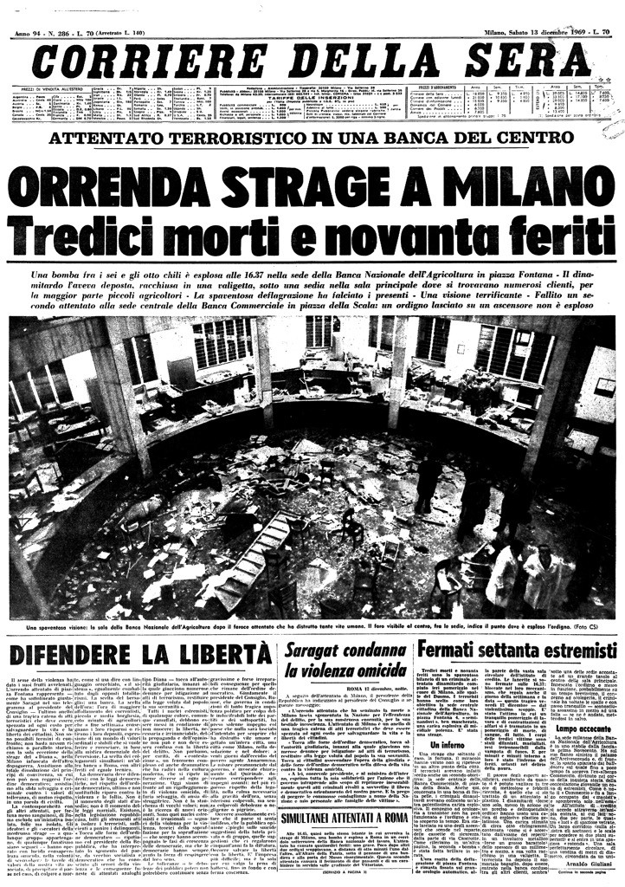

Strage di Piazza Fontana (12 Dicembre 1969)

Riproduzione digitale della prima pagina del Corriere della sera datato 13 dicembre 1969 e pubblicato dal Centro documentazione archivio Flamigni onlus, Fondo Flamigni Sergio.
Scheda Descrittiva
| Titolo | Prima pagina del Corriere della sera del 13 dicembre 1969 |
|---|---|
| Identificatore | image_ByPSGD.png |
| Autore / Ente | Centro documentazione archivio Flamigni onlus-Fondo Flamigni Sergio. |
| Data | 13 Dicembre 1969 |
| Metadati XML | Scarica / Visualizza Metadati XML |
| Luogo | Milano, Piazza Fontana (Vedi sulla mappa) |
| Soggetto / Tema | Strage di Piazza Fontana; Anni di Piombo; Indagini giudiziarie |
| Persone Correlate | Giuseppe Pinelli |
Storia
Il 12 dicembre 1969 alle 16:30 un ordigno esplode nel salone centrale della Banca nazionale dell'Agricoltura di Milano, in piazza Fontana, dove coltivatori diretti e imprenditori agricoli si erano radunati dalla provincia per il mercato settimanale.
Il pavimento del salone fu squarciato e gli effetti furono devastanti.
La bomba uccise diciassette persone e altre novanta furono ferite. Un altro ordigno viene rinvenuto lo stesso giorno nella sede della Banca commerciale di piazza della Scala, sempre a Milano.
Tra le 16.55 e le 17.30, a Roma, si verificarono altre tre esplosioni: una, all'interno della Banca nazionale del Lavoro di via San Basilio; altre due, sull'Altare della Patria di piazza Venezia.
I cinque attentati del pomeriggio del 12 dicembre 1969 siglarono l'inizio della strategia della tensione. Un progetto eversivo preparato attraverso diversi attentati finalizzati a utilizzare il disordine e la paura per sbocchi di tipo autoritario, come una stabilizzazione neocentrista. Per quanto riguarda la strage di Piazza Fontana sono stati accertati «accordi collusivi con apparati istituzionali», come è scritto nella relazione della Commissione Stragi.
Dopo aver inizialmente imboccato la “pista anarchica”, le indagini si concentrarono su alcuni esponenti del gruppo padovano facente capo al terrorista nero Franco Freda e all’organizzazione di estrema destra Ordine nuovo, e coinvolsero esponenti di spicco dei Servizi segreti. Il lungo e tormentato iter processuale, si è concluso nel 2005 con assoluzioni complessive, ma certificando che la strage è attribuibile all’organizzazione eversiva di estrema destra Ordine nuovo. Restano confermate in via definitiva le condanne per condotte finalizzate al depistaggio di due ufficiali del SID e il coinvolgimento dell’esperto di armi di Ordine nuovo Carlo Digilio (reo confesso e collaboratore di giustizia). L’ultimo processo, inoltre, ritiene dimostrato, sotto il profilo storico, il coinvolgimento nella strage dei terroristi neri Franco Freda e Giovanni Ventura (non più processabili perché già assolti in via definitiva nel primo processo).